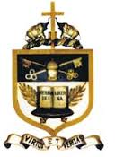

| Resources and Collection |
Services |
Rules on use |
Opening Hours |
Memberships |
ST PETER'S COLLEGE LIBRARY
Address:St Peter's College ,Colombo 4.
Tel No:2588249

Ever since St. Peter's College was found in 1922 ,the school has been punching above its weight and even
outshining its founders in many fields.The college has grown remarkably through its rich history with
many famous personalities being moulded before going out to conquer the world.St.Peter's has produced
distinguished academics,judges and Legal practitioners,defence personnel,sportsmen,renowned
persons in the literary and entertainment fields and politicians to name a few areas with many going on to
head their respective fields.The college now boasts of excellent facilities and national champions in a wide
range of activities which underline the amazing groundwork done by the people who established this institution.